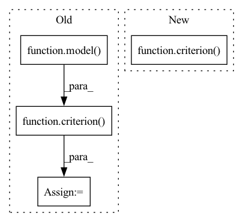

Pattern ID :39922
Before Change
input1 = input1.to(device)
K = input2.to(device)
output = model( input1) //,input2)
rawscores = output.squeeze(-1)
proba = torch.softmax(rawscores,-1)
loss = torch.mean(criterion( proba,K[:,:,:,1]) *input1[:,:,:,1])
//loss = criterion(proba,K[:,:,:,1])
helper.update_meter("train", "loss", loss.data.item(), n=1)
After Change
output = model(data)//,input2)
raw_scores = output.squeeze(-1)
loss = criterion( raw_scores,target_deviced)
//loss = criterion(proba,K[:,:,:,1])
helper.update_meter("train", "loss", loss.data.item(), n=1)
optimizer.zero_grad()In pattern: SUPERPATTERN
Frequency: 3
Non-data size: 4
Instances Fragment ID: 113461986
Project Name: mlelarge/graph_neural_net
Commit Name: a776ae15386c8aa8120f889acb880a63fcea74b6
Time: 2021-03-22
Author: amaury.triboulin@gmail.com
File Name: trainer.py
M Class Name: AnonimousClass
N Class Name: AnonimousClass
M Method Name: train_triplet(9)
N Method Name: train_triplet(9)
M Parent Class:
N Parent Class:
M File Name: trainer.py
N File Name: trainer.py
M Start Line: 15
M End Line: 41
N Start Line: 13
N End Line: 40
Before Change
step_size, tol=1e-3, iterations=None,
store=None):
model.eval()
loss = -criterion( model( data + self.delta) , target)
gap = torch.tensor(np.inf)
ii = 0
while gap.item() > tol:
if ii == iterations:After Change
self.optimizer.zero_grad()
output = model(data + self.delta)
loss = -criterion( output, target)
loss.backward()
with torch.no_grad():
gap = self.constraint.fw_gap(self.delta.grad, self.delta) Fragment ID: 113461990
Project Name: openopt/chop
Commit Name: 0352448fafdec6b6b2d408d6d6254e328e90d58a
Time: 2020-10-07
Author: geoffrey_negiar@berkeley.edu
File Name: constopt/adversary.py
M Class Name: Adversary
N Class Name: Adversary
M Method Name: perturb(9)
N Method Name: perturb(9)
M Parent Class:
N Parent Class:
M File Name: constopt/adversary.py
N File Name: constopt/adversary.py
M Start Line: 16
M End Line: 33
N Start Line: 16
N End Line: 43
Before Change
target = y[:, 1:].contiguous().cuda()
teacher_forcing_rate = scheduler_sampling(epoch)
logits = model( x, ground_truth=y, teacher_forcing_rate=teacher_forcing_rate)
y_hats = torch.max(logits, dim=-1)[1]
//print(label_to_string(target, id2char))
loss = criterion( logits.view(-1, logits.size(-1)), target.view(-1))
total_loss += loss.item()
num_samples += batch_size
After Change
preds = model(inputs. input_length, targets)
loss = criterion( preds.view(-1, preds.size(-1)), targets[:,1:].view(-1))
loss.backward()
nn.utils.clip_grad_norm_(model.parameters(), max_norm=max_norm)
optimizer.step()
Fragment ID: 113461993
Project Name: qute012/kosr
Commit Name: fad0d9ba92dcbd3024650057784c0a484dc1f8e7
Time: 2021-01-28
Author: ejrwls012@gmail.com
File Name: kosr/trainer/trainer.py
M Class Name: AnonimousClass
N Class Name: AnonimousClass
M Method Name: train(6)
N Method Name: train(6)
M Parent Class:
N Parent Class:
M File Name: kosr/trainer/trainer.py
N File Name: kosr/trainer/trainer.py
M Start Line: 26
M End Line: 35
N Start Line: 26
N End Line: 35